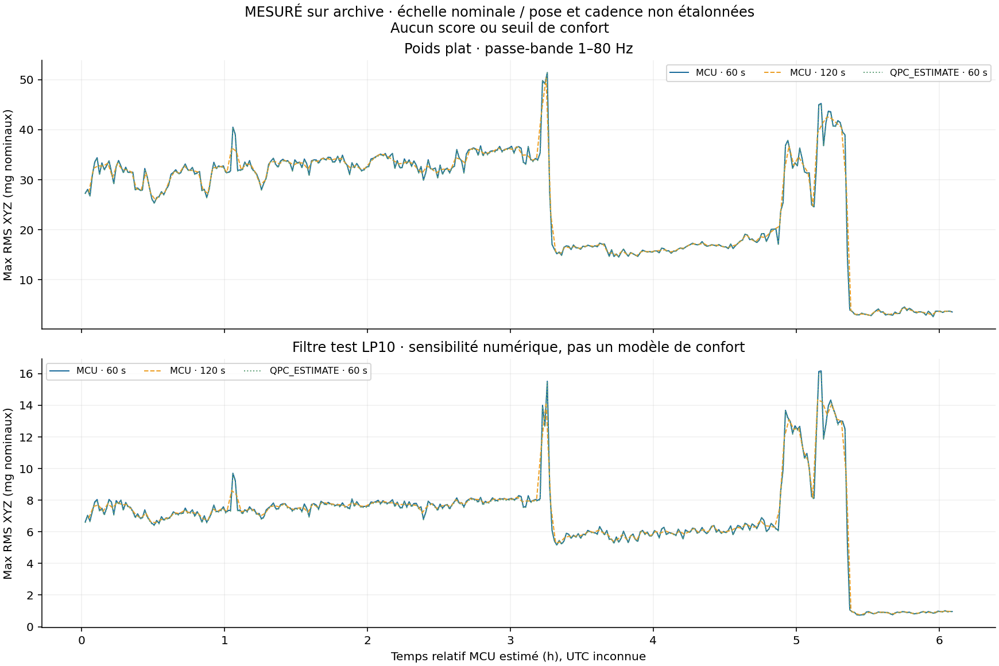
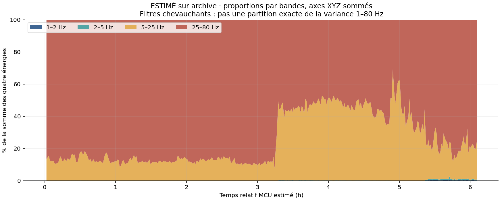
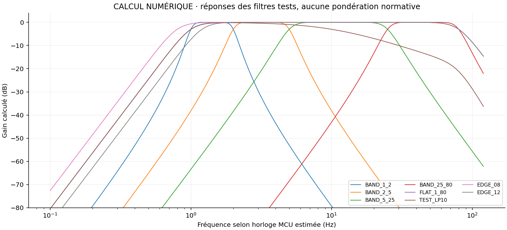

±2/±4 g ne sont pas recommandés sur l'ensemble de l'archive : un épisode contient des sorties nominales jusqu'à 7,677 g. Ce n'est pas une preuve de choc mécanique ; les bruts natifs manquent.
Note de décision et limites · RMS non arrondis · Périodes alignées · Sensibilités · Réponses numériques · Provenance et preuves